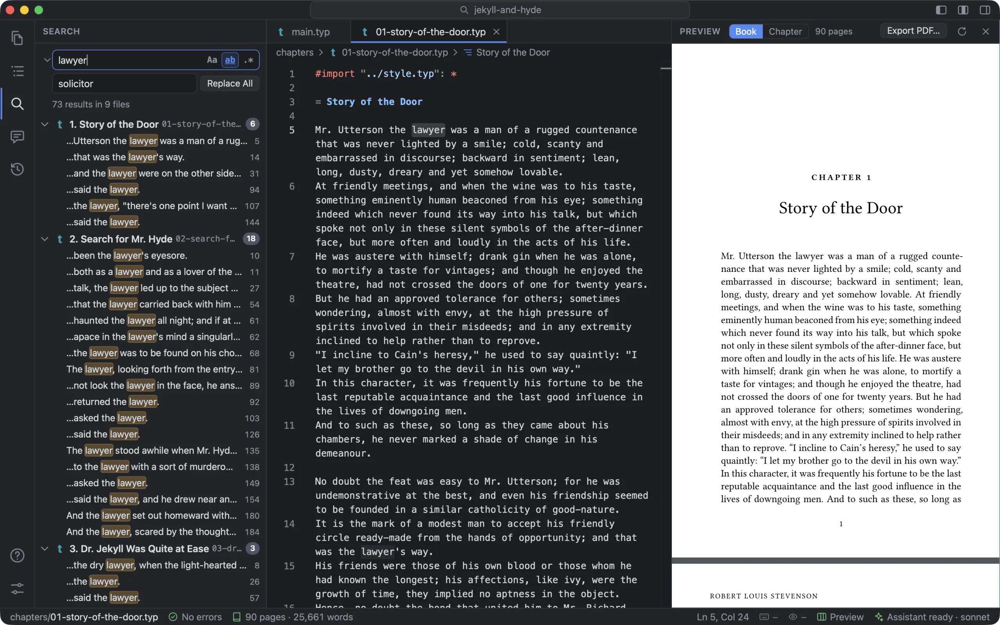
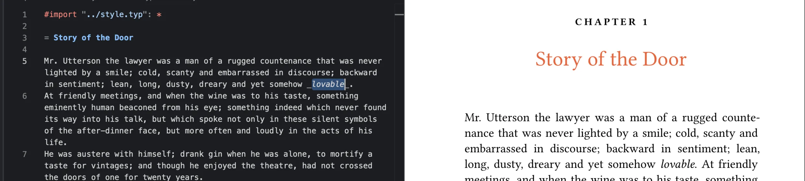
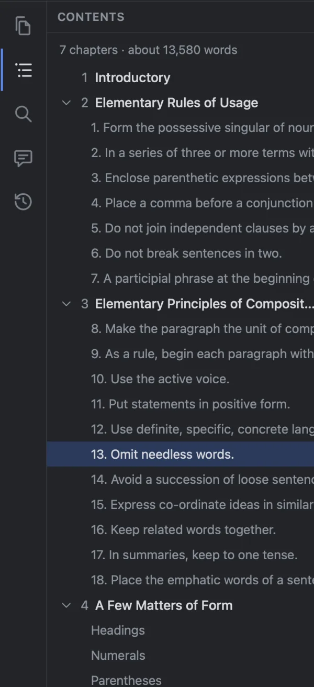
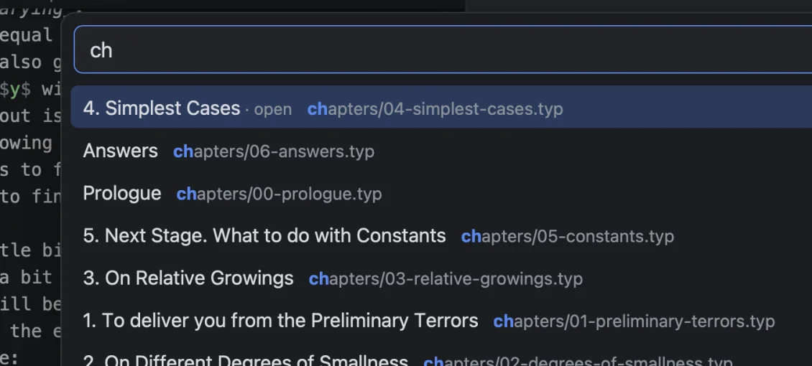
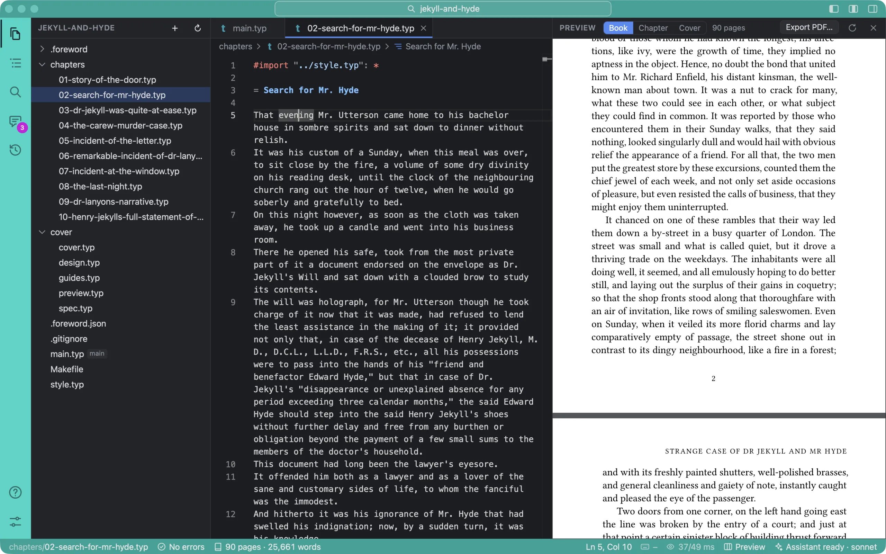

Writing in it
Typst is plain text with a little markup, and the editor shows it. Headings are bold, maths is coloured, _emphasis_ is set in italic and *strong* in bold, as they’ll print. // TODO:, FIXME and NOTE comments get a coloured tag and a mark in the scrollbar. The highlighting is Tinymist’s own grammar, the one VS Code’s Typst extension uses, so it matches what you’d see there.
Select a word and type _ and the word is wrapped, _word_, still selected, so another * makes it bold as well. The same works for *, $, brackets and quotes. ⌘Z undoes a word or so at a time, and ⇧⌘Z redoes. (Both took some fixing: the Mac’s own Undo was undoing a hidden text field, not the editor.)

_ over a word: it’s wrapped, and italic on the page.Long lines wrap at the edge of the pane, at a column you choose, or not at all, with rulers wherever you want them (Settings ▸ Editor ▸ Long lines). Text size is separate from the rest of the window.
Formatting on save
⌘S tidies the Typst first: spacing and indentation in code, the & columns of multi-line equations lined up, and a blank line around each heading. Where there are several blank lines in a row it leaves one, and none at the start or end of the file; Typst prints any number of blank lines as one paragraph break, so the page doesn’t change. Raw text and /* comments */ keep theirs. Your sentences and where you broke them stay as you wrote them. The cursor stays where it was, and ⌘Z takes out only the formatting. It uses the same formatter and 120-column default as VS Code’s Typst extension, so a book formatted here doesn’t change when you open it there. It’s on by default; turn it off in Settings ▸ Editor, or save once without it from the command palette.
Finding your way
Search the book
⇧⌘F searches every chapter at once, with options for case, whole words and patterns. Open chapters are searched as they are in the editor, unsaved changes included. Results are grouped under each chapter’s number and title, in reading order, and follow your edits. Replace All asks first, then saves a version in History before it changes anything, so one click takes the whole book back.
Contents
The book’s chapters in order, numbered as the book numbers them, each with its sections and roughly how many words it has, and the whole book’s count at the top. The section you’re in is lit, and opening Contents scrolls it to the middle of the list, so in chapter 17 of a long book you don’t have to look for your place. Click any heading to go there. Collapse all folds it to just the chapters, and the chapter you’re in stays lit.


Chapters by number
Go to File (⌘P) lists chapters as “4. Simplest Cases”, and typing 4 finds it. The numbers come from reading the main file the way Typst does, so they’re right however the book includes its chapters: #include "ch04.typ", or inside code, as in #book-chapter(include "ch04.typ"). A preface without a numbered heading doesn’t push chapter 1 to 2. Go to File, Contents, Search and the assistant all use the same numbering, so they never disagree.
VS Code’s keys
The command palette (⇧⌘P) has about 120 commands, each with its shortcut, your recent ones first. Tabs work as they do in VS Code: ⌘W, ⇧⌘T to reopen, ⌃⇥ to step through, ⌃1–9. Under the tabs, a path bar with the chapter’s headings. If your fingers know VS Code, they know this.
A colour for each book
With two books open, every window looks the same. Give each book a colour (Settings ▸ This book ▸ Colour, or Surprise me) and its title bar, the icons down the side, and the status bar wear it. The shades are worked out the way VS Code’s Peacock extension works them out, value for value, so a book you’ve already coloured in VS Code looks the same here, and wears that colour without being asked.

The dividers between the panes wear it too, as in VS Code: each is a 4 px band in the title bar’s colour, lit as you point at it. A divider takes a press 6 px either side of its band. It used to be a 1 px line, easy to miss, and a press just beside it on the editor’s side also hit the editor’s scrollbar and jumped the text.
Light or dark
Settings ▸ General ▸ Appearance ▸ Theme is As the Mac is (the default), Light or Dark, and the command palette has all three. Before, Foreword was light only when the Mac was set to Light. It sets the whole app’s appearance, so the editor, the chat and the window’s own buttons all follow it, in every window, from the moment it opens.
For someone new
The first time you open a book, a short tour shows you around the window, one part at a time, nine steps in about a minute. Help ▸ Take the Tour runs it again. Typst basics, from the welcome screen, opens beside your book and takes about five minutes. Typst itself is far smaller than LaTeX: headings are =, emphasis is _, and most of the rest the assistant can write for you.
What it doesn’t do
- No Typst completions or hover documentation yet, and no spell check.
- Search doesn’t look inside pictures, PDFs or exports.
- Word counts leave out code, maths and labels, so they’re “about”.